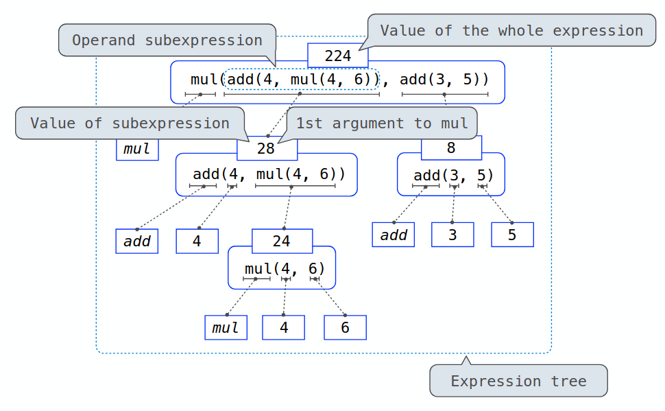

Expressions
Table of Contents
1. Expressions
An expression describes a computation and evaluates to a value. Some examples are:
2: number or numeralpi: name'are you human': stringabs(-1): call expression
Symbols like + and * can also be expressed using a call expression, being add() and mul() respectively.
1.1. Call Expressions
A call expression is made up of an operator and operands. In add(1, 2), the add is the operator, and the 1 and 2 are operands.
The evaluation procedure for call expressions is: (1) evaluate the operator –> function (2) evaluate each operand –> argument (3) apply the function to the arguments
We can write out an expression tree with subexpressions as well:
